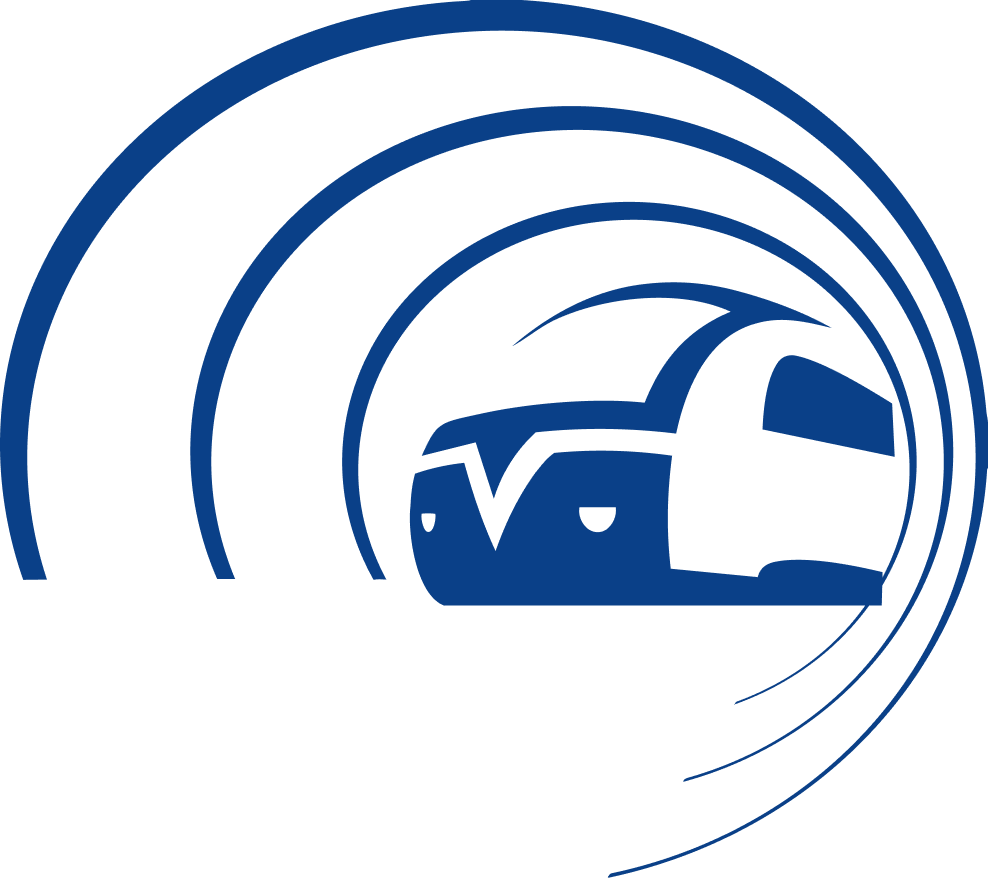
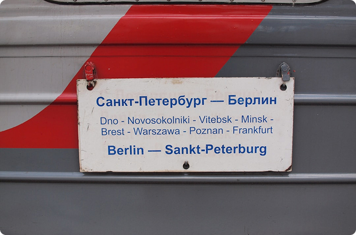
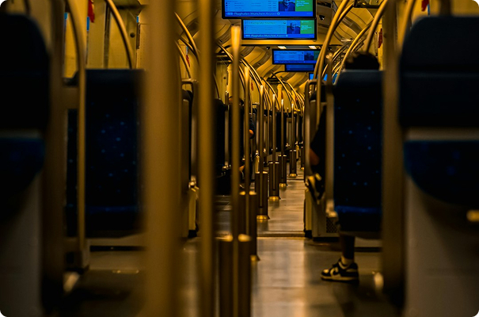
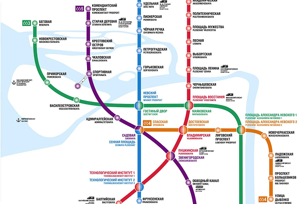
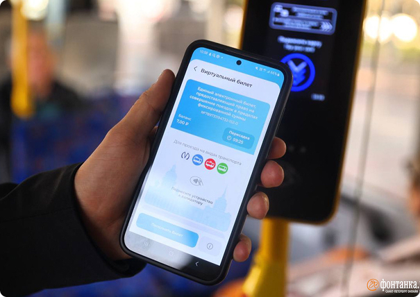
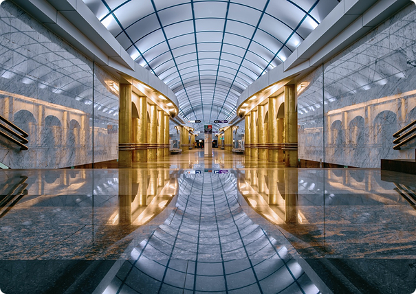
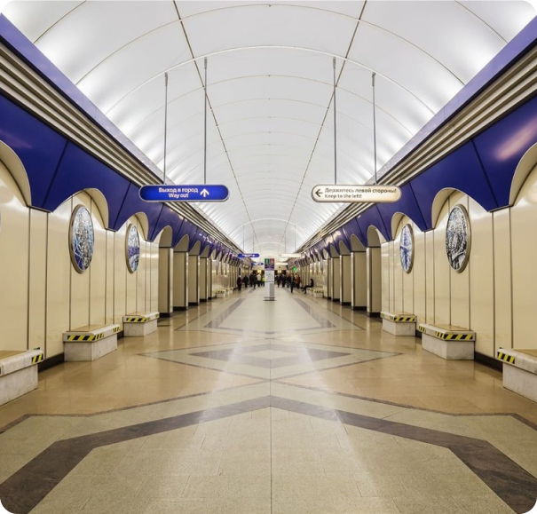

ПЕТЕРБУРГСКИЙ МЕТРОПОЛИТЕН
Крупнейшая внеуличная транспортная сеть Северной столицы. Надёжность, комфорт и безопасность для миллионов пассажиров.


Станция «Автово»
ПОДРОБНО О МЕТРОПОЛИТЕНЕ
Сооружению первой очереди Ленинградского метро помешала начавшаяся Великая Отечественная война, но уже в 1944 году часть проектировщиков и строителей была отозвана с фронтов еще не закончившейся к тому времени войны. Таким образом, создание ленинградской подземки начиналось как выполнение боевой задачи. Через десять с небольшим лет подземная трасса «Автово - Площадь Восстания» была открыта.
Прошедшие годы, сжатые в выверенные до секунд графики движения голубых экспрессов, превратили питерскую подземку в современный подземный город. Трассы метро соединили исторический центр города с его некогда забытыми окраинами. Голубые вагоны для многих стали началом пути во взрослую жизнь. Метрополитен сегодня — это 72 станции, 5 линий и миллионы пассажиров ежедневно. Петербургское метро - это не просто сложный транспортный комплекс, это - живой, развивающийся организм, призванный служить многим поколениям жителей великого города.


Схема линий скоростного транспорта
СХЕМА ЛИНИЙ СКОРОСТНОГО ТРАНСПОРТА
Чтобы идти в ногу со временем, справляться с растущими нагрузками и высоким пассажиропотоком в метрополитене постоянно проводится модернизация имеющихся систем. Это обновление, реконструкция и ремонт сооружений, подвижного состава, строительство новых линий и многое другое. Совершенствуется и оплата проезда: так, пассажирам был предложен новый вариант оплаты проезда с помощью специальной банковской карты.
МОДЕРНИЗАЦИЯ
Совместно с партнерами метрополитен запустил тестовую эксплуатацию комплексного решения по оплате проезда в метро при помощи мобильного телефона. Также в метрополитене идет обширная программа по установке новых автоматов по продаже билетов.
Поэтапно обновляется подвижной состав метрополитена: прошли испытания принципиально новые современные вагоны, которые со временем придут на замену устаревшему подвижному составу. Весь новый подвижной состав будет оборудован системой эвакуации пассажиров в тоннеле в экстренных ситуациях.


ИНФРАСТРУКТУРА
Комплексная реконструкция системы электроснабжения проводилась при увеличении на линиях парности движения поездов, появлении новых вагонов с большей мощностью двигателей. Прошли несколько этапов модернизации системы телемеханики, обеспечивающие дистанционное управление.
Многое сделано также и в области справочно-информационного обслуживания пассажиров. Так, у вестибюлей станций размещены наружные информационные установки со схемой скоростного транспорта. На всех вестибюлях расположены уголки информации для пассажиров, терминалы для проверки проездных документов.
РАЗВИТИЕ И ПАРТНЁРСТВО
Развитие метрополитена невозможно без всестороннего сотрудничества. В настоящее время у метрополитена уже имеется положительный опыт государственно-частного партнерства. Пример – строительство новых станций с привлечением инвесторов.
Решающим фактором для достижения нормального транспортного обслуживания города является расширение сети метрополитена, приход его в отдаленные районы, создание дополнительных распределительных линий скоростного типа и новых пересадочных узлов.
Трудно назвать другую отечественную отрасль, которая разработала и внедрила бы такое количество современных систем, как метрополитен. Благодаря международному сотрудничеству между метрополитенами России и мира сохраняются и развиваются партнерские связи.

БЕЗОПАСНОСТЬ
Метрополитен – сложнейшая транспортная система, требующая максимального внимания к вопросам обеспечения общественной безопасности. Одним из главных направлений в работе остается совершенствование систем безопасности и высокая динамика развития связанных с ней технологий.
В 2005 году открылся Ситуационный центр, куда в реальном времени стекается вся информация о работе транспортной системы. Благодаря его работе удалось значительно повысить оперативность принятия решений.
ДОСТУПНОСТЬ
В метрополитене реализуется множество мероприятий для улучшения качества обслуживания людей с ограниченными возможностями. Все подземные станции оснащены системой звукового оповещения. Более 600 вагонов оснащены визуальными устройствами, информирующими о пути следования поезда.
Более 250 лестничных сходов оборудованы пандусами для спуска/подъёма детских колясок и сумок-тележек. Станции метрополитена поэтапно оснащаются ограничительными линиями для тактильного восприятия.